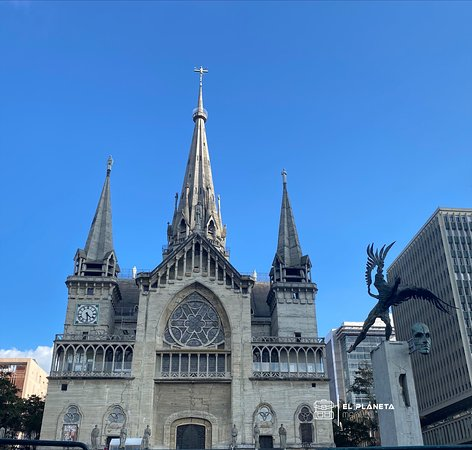

Descripción de Ciudad 6
Ciudad 6 es conocida por su rica historia colonial, calles empedradas y una arquitectura que mezcla lo moderno con lo tradicional. Sus plazas vivas, cafés locales y festivales culturales la convierten en un destino ideal para todo tipo de viajeros.
Sitios Históricos

Catedral Antigua
Construida en el siglo XVII, mezcla estilos barroco y neoclásico.

Fuerte Colonial
Antigua fortaleza española con vistas panorámicas al valle.

Museo de la Ciudad
Exhibe artefactos precolombinos y colección de arte local.